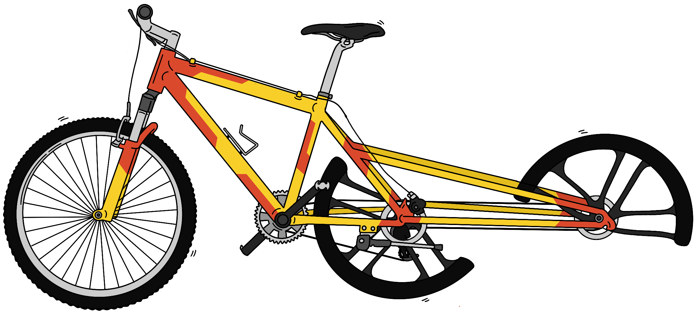
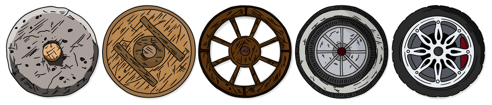
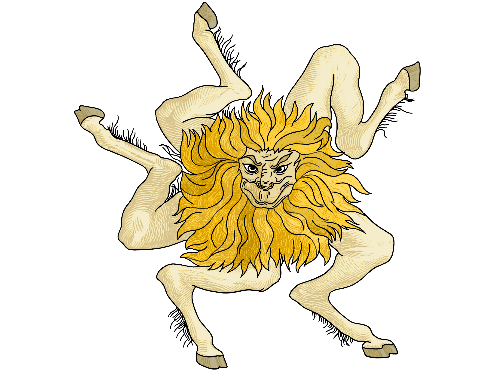

Why You Should Reinvent the Wheel
·
System Wisdom·
#System Design 4 min read
4 min read

Reinvent the Wheel!
As I get slightly older and slightly wiser - to me, it’s more and more apparent that we humans live a life full of contradiction, are rarely self-satisfied, and thrive on learning and discovering new things. It’s as if a duty to contribute with all the might to a better future, not for oneself, but for the future, that’s way beyond imagination and self-existence.
On these lines, it almost always gets to my core when someone overuses “Don’t reinvent the wheel”—implying that a solution to the problem already exists. In most cases, to underplay the problem or assert an opinion before understanding the crux of the problem.
Starting with the obvious, the wheel would still look like a big chunk of stone that rolls if we didn’t reinvent the wheel. While some may say that it’s an upgrade rather than reinvention, going by the definition “change (something) so much that it appears to be entirely new,” reinvention is more than fair in this context.

Evolution of Wheel!
The primitive wheel did the job thousands of years ago but completely unprepared for today’s world. If not for the natural innovators around the world who insisted and invested in reinventing the wheel from time to time.
Once again, it’s not just about reinventing anything and everything—using the phrase so much that it has become so common that we often don’t challenge the existing solutions is something to ponder on. But this isn’t always true; products that are deeply engraved in our daily lives are eagerly awaited. For instance, the communication medium, specifically mobile devices, has drastically changed (reinvented) in a short span of 2 decades.
While I agree that all of these are subjective and among the common examples that have conflicting reactions. What if the repercussions are profound and have a severe impact on the future of the world. At first thought, the education system has been about the same for the past 100 years or earlier; despite the efforts of amazing educators to adapt to the modern world, the changes aren’t drastic.
English, Physics, Chemistry, and Mathematics - no doubt these are essential, but it seems unfair to ask students to pause their passions while they put all of their time and work into these “core” subjects. Imagine a world where students go to school and teachers help them explore their passion and are more concerned about equipping students with the skills and opportunities rather than teaching the same generic content over and over again. No doubt the education system is stuck in a timeline, and it’s about time to reinvent the wheel of education suited to the road of 2022 and beyond.

**End of philosophical thinking**
I’m out of count - the number of times “don’t reinvent the wheel” is overused in software engineering.
As a norm, avoiding reinventing the wheel goes unsaid. If the functionality exists in the standard built-in library of a language. However, if it comes down to using third-party libraries, it better be a hard judgment call, considering how widely the library is used and maintained.
Even if the library has an active community and is commonly used, it’s still a third-party dependency created for a larger use case. Software engineers emphasizing the virtues of code reuse while glossing over the danger of dependencies are nothing but trouble. A project with too many third-party dependencies will likely fall apart in the long run and devolves into a maintenance and refactoring nightmare.
Moreover, the existing wheel(s) either does way more than what’s necessary and suffers from the inner platform effect and are unnecessarily complex, or they are missing some key feature and would be difficult to implement on top of what’s already there.
Furthermore, using existing wheels often adds constraints to the project:
- The existing wheel requires a different language and/or programming style.
- The existing wheel only works with the legacy language version (Example: Java 8 instead of Java 11).
- Efficiency, flexibility, and simplicity: the existing wheel makes suboptimal choices.
- The existing wheel has tons of legacy cruft that make life difficult. For example, A Java library forcing to use container classes because it was written before generics, etc.).
- The way the existing wheel models the problem is entirely different than what’s convenient for the use case.
- The library adds a massive, brittle dependency that would be a major hassle when all that’s needed is a small subset of its features.
So, leveraging existing code is good - but dependencies are bad. While the two may seem to contradict each other, the key here is to find the right balance:
- Preference for standard built-in libraries,
- Choose acceptable libraries that have an active community and user base
- Choose an external library where at least half the features the library has to offer are useful to the project.
- Lastly, a relatively unknown library only if you are familiar with the source code to maintain it yourself.
It’s all a balancing act. But the point is that just blindly saying, “Code reuse good! Reinventing wheel bad” is dangerous and dogmatic. The benefits of leveraging third-party code must be weighed against the disadvantages of introducing dependencies.
References
[1] K. Smithers, “Why we Need to Reinvent the Wheel,” www.ted.com, 1549. https://www.ted.com/talks/katie_smithers_why_we_need_to_reinvent_the_wheel (accessed Jun. 23, 2022).
[2] “Is reinventing the wheel really all that bad?,” Software Engineering Stack Exchange. https://softwareengineering.stackexchange.com/questions/29513/is-reinventing-the-wheel-really-all-that-bad (accessed Jun. 24, 2022).

Cite this article as: Adesh Nalpet Adimurthy. (Jun 26, 2022). Why You Should Reinvent the Wheel. PyBlog. https://www.pyblog.xyz/reinvent-the-wheel
 #index
#index